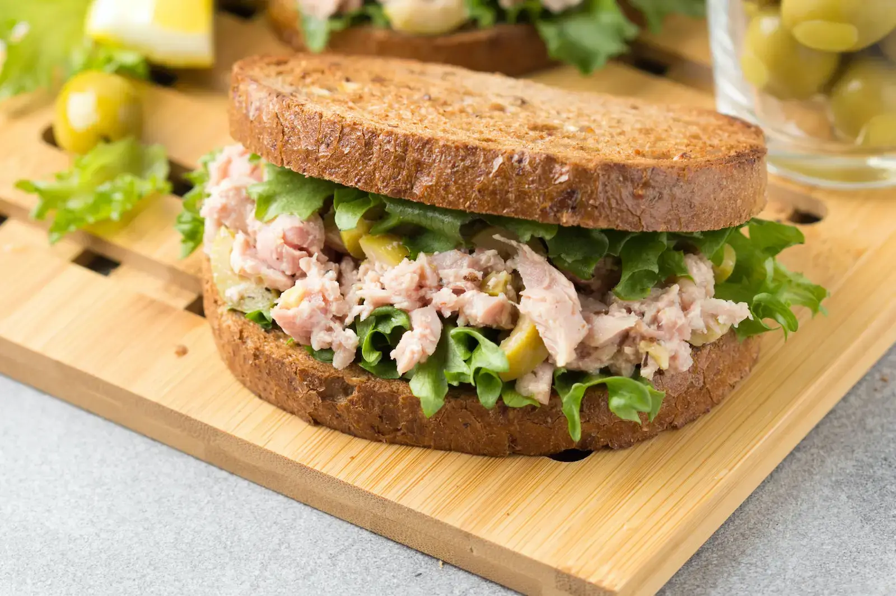

Atún: 4 razones para consumir este súper pescado
Este pez, es consumido en diversas formas en todo el mundo, desde sushi hasta enlatado.
El atún, conocido por su sabor delicioso y su versatilidad en la cocina, también es una potencia nutricional que ofrece una serie de beneficios para la salud. Es por ello que Diego Balarezo, gerente comercial de Pesquera Hayduk, destaca 4 razones para consumir este nutritivo alimento.
-
Alto contenido de proteínas: el atún es una excelente fuente de proteínas de alta calidad, esenciales para el crecimiento y la reparación de tejidos en el cuerpo humano. Proporciona una cantidad significativa de proteínas, lo que lo convierte en una opción ideal para aquellos que buscan mantener una dieta equilibrada y saludable.
-
Rico en ácidos grasos omega-3: el atún es uno de los pocos alimentos naturales que es una fuente excepcionalmente rica de ácidos grasos omega-3, especialmente ácido eicosapentaenoico (EPA) y ácido docosahexaenoico (DHA). Estos ácidos grasos son conocidos por sus beneficios para la salud cardiovascular, el desarrollo cerebral y la función cognitiva.
-
Bajo en calorías y grasas saturadas: a pesar de su perfil nutricional, el atún es relativamente bajo en calorías y grasas saturadas. Esto lo convierte en una opción ideal para aquellos que buscan mantener un peso saludable o reducir la ingesta de grasas saturadas en su dieta.
-
Fuente de vitaminas y minerales: El atún también es una excelente fuente de varias vitaminas y minerales esenciales, incluyendo vitamina D, vitamina B12, selenio y magnesio. Estos nutrientes desempeñan roles importantes en una variedad de funciones corporales, desde el fortalecimiento de los huesos hasta el apoyo al sistema inmunológico.